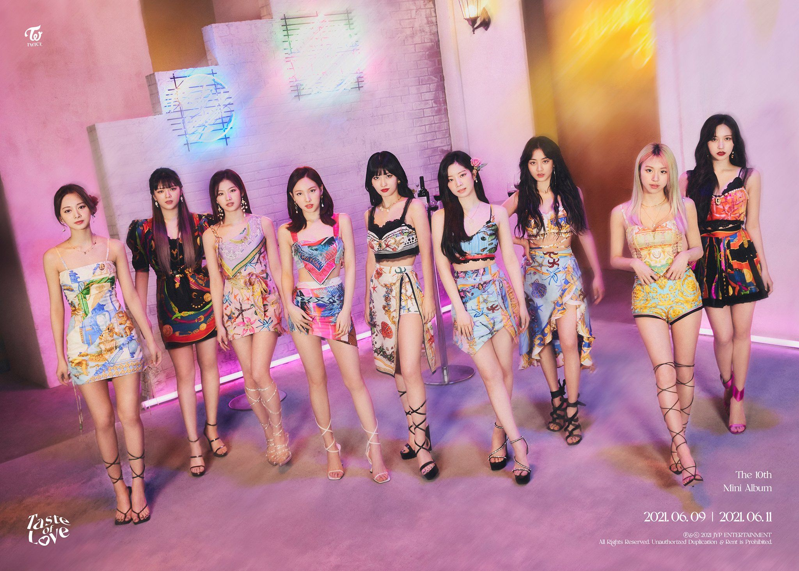

TWICE (트와이스) is a girl group consisting of 9 members: Jihyo, Nayeon, Jeongyeon, Momo, Sana, Mina, Dahyun, Chaeyoung, and Tzuyu. The band debuted on October 20, 2015, through the survival show Sixteen, under JYP Entertainment. As of February 2020, JYPE is partnering with Republic Records to help promote TWICE worldwide.
TWICE Fandom Name: Once
TWICE Official Fan Colors: Apricot & Neon Magenta
Stage Name: Jihyo (지효)
Birth Name: Park Ji Soo (박지수) but legalized her name to Park Ji Hyo (박지효)
Nationality: Korean
Position: Leader, Main Vocalist
Birthday: February 1, 1997
Zodiac sign: Aquarius
Official Height: 162 cm (5 ft 3¾ in) / Approx. Real Height: 160 cm (5’3″)
Official Weight: 56 kg (123 lbs) / Approx. Real Weight: 49 kg (108 lbs)
Blood Type: O
Stage Name: Nayeon (나연)
Birth Name: Im Na Yeon (임나연)
Nationality: Korean
Position: Lead Vocalist, Lead Dancer, Center, Face of the Group
Birthday: September 22, 1995
Zodiac Sign: Virgo
Official Height: 163 cm (5’4″) / Approx. Real Height: 163 cm (5’4″)
Weight: 47 kg (104 lbs)
Blood Type: A
Stage Name: Jeongyeon (정연)
Birth Name: Yoo Kyung Wan (유경완), but she legalized her name to Yoo Jeong Yeon (유정연)
Nationality: Korean
Position: Lead Vocalist
Birthday: November 1, 1996
Zodiac Sign: Scorpion
Official Height: 169 cm (5’7″) / Real Height: 167 cm (5’6″)
Weight: 49.1 kg (108 lbs)
Blood Type: O
Stage Name: Momo (모모)
Birth Name: Hirai Momo (平井 もも)
Nationality: Japanese
Position: Main Dancer, Sub Vocalist, Sub Rapper
Birthday: November 9, 1996
Zodiac Sign: Scorpio
Official Height: 167 cm (5’6″) /Real Height: 163 cm (5’4″)
Weight: 48.5 kg (106 lbs)
Blood Type: A
Stage Name: Sana (사나)
Birth Name: Minatozaki Sana (湊崎 紗夏)
Nationality: Japanese
Position: Sub Vocalist
Birthday: December 29, 1996
Zodiac Sign: Capricorn
Official Height: 168 cm (5’6″) / Approx. Real Height: 163 cm (5’4″)
Weight: 47 kg (104 lbs)
Blood Type: B
Stage Name: Mina (미나)
Birth Name: Myoui Mina (名井 南)
English Name: Sharon
Nationality: Japanese-American
Position: Main Dancer, Sub Vocalist
Birthday: March 24, 1997
Zodiac Sign: Aries
Official Height: 163 cm (5’4″) / Approx. Real Height: 163 cm (5’4″)
Weight: 46 kg (101 lbs)
Blood Type: A
Stage Name: Dahyun (다현)
Birth Name: Kim Da Hyun (김다현)
Nationality: Korean
Position: Lead Rapper, Sub Vocalist
Birthday: May 28, 1998
Zodiac Sign: Gemini
Official Height: 165 cm (5’5″) / Real Height: 158.6 cm (5’3″)
Weight: 48.9 kg (108 lbs)
Blood Type: O
Stage Name: Chaeyoung (채영)
Birth Name: Son Chae Young (손채영)
Nationality: Korean
Position: Main Rapper, Sub Vocalist
Birthday: April 23, 1999
Zodiac Sign: Taurus
Official Height: 163 cm (5’4″) / Real Height: 158.9 cm (5’3″)*
Weight: 46 kg (101 lbs)
Blood Type: B
Stage Name: Tzuyu (쯔위)
Birth Name: Chou Tzuyu (周子瑜)
Korean Name: Chou Tzu Yu (저우쯔위/주자유)
English Name: Sally
Nationality: Taiwanese
Position: Lead Dancer, Sub Vocalist, Visual, Maknae
Birthday: June 14, 1999
Zodiac Sign: Gemini
Height: 170 cm (5’7″)
Weight: 48 kg (106 lbs)
Blood Type: A
.png)